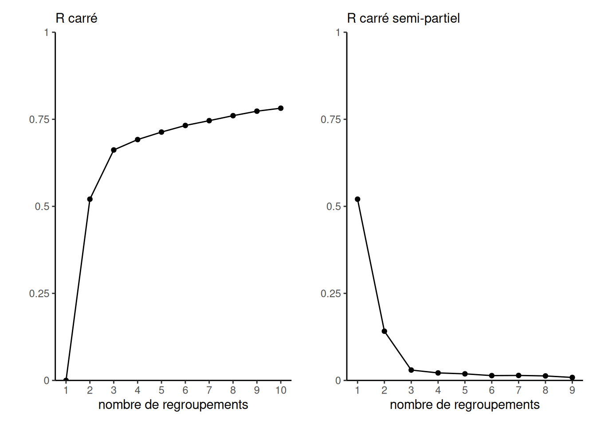
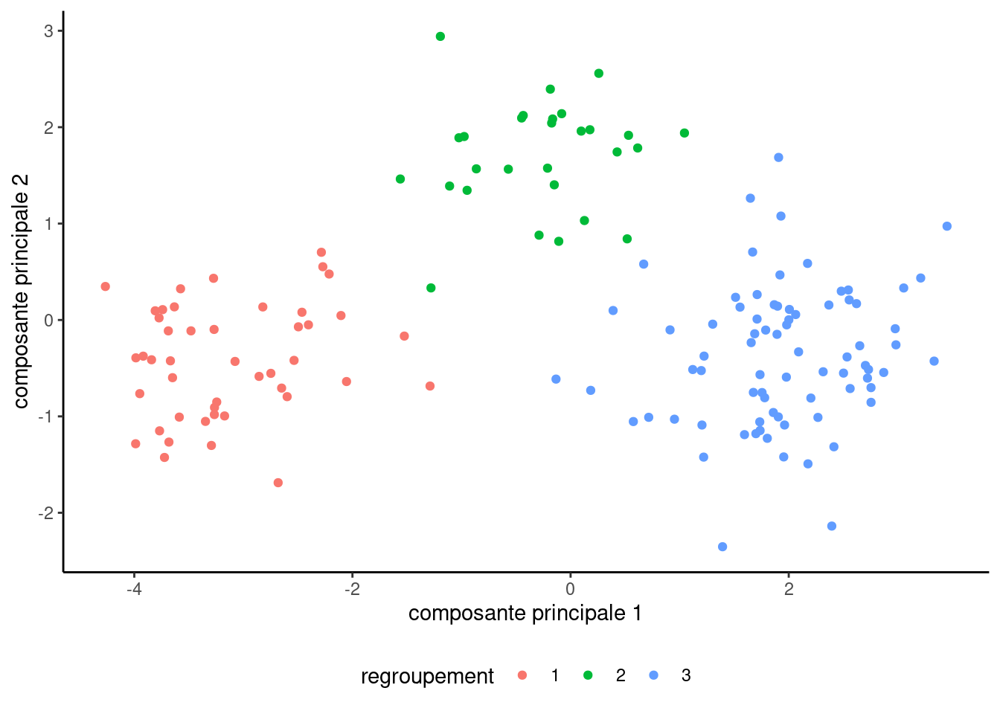
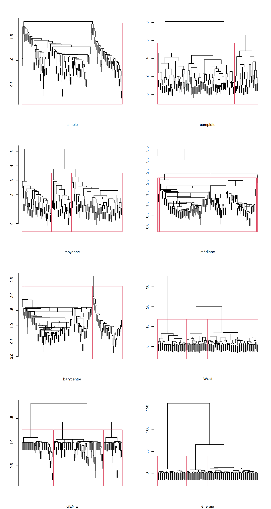
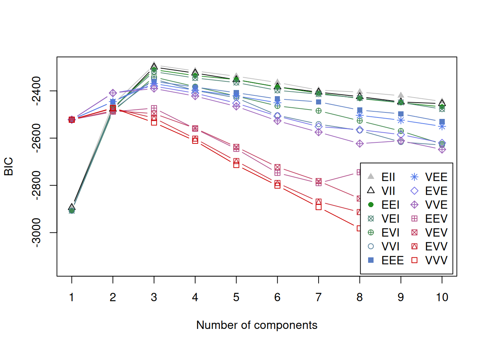
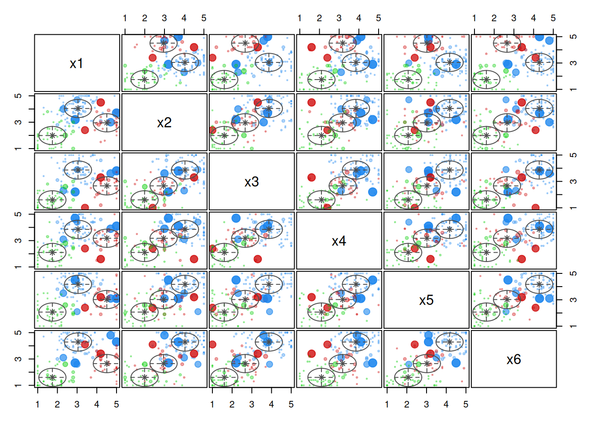

Les données fictives regroupement1 sont inspirées de Hsu & Lee (2002). Ces données contiennent des échelles pour certains éléments d’un questionnaire. Ce dernier a été élaboré afin d’évaluer l’importance de 55 caractéristiques des opérateurs de voyages organisés en autobus et des voyages eux-mêmes à l’aide d’une échelle de Likert à cinq points, allant de extrêmement important (5) à pas du tout important (1).
Les variables représentent les activités sociales, les politiques de l’opérateur et références, la flexibilité des horaires, la santé et sécurité, le matériel publicitaire et la réputation.
Doit-on standardiser les données avant d’effectuer l’analyse?
x1 x2 x3 x4
Min. :1.000 Min. :1.000 Min. :1.000 Min. :1.000
1st Qu.:2.100 1st Qu.:2.400 1st Qu.:1.925 1st Qu.:2.525
Median :2.800 Median :3.200 Median :3.000 Median :3.150
Mean :2.933 Mean :3.218 Mean :2.957 Mean :3.197
3rd Qu.:3.775 3rd Qu.:4.100 3rd Qu.:3.900 3rd Qu.:3.900
Max. :5.000 Max. :5.000 Max. :5.000 Max. :5.000
x5 x6
Min. :1.000 Min. :1.000
1st Qu.:2.400 1st Qu.:1.925
Median :3.450 Median :3.400
Mean :3.321 Mean :3.170
3rd Qu.:4.200 3rd Qu.:4.400
Max. :5.000 Max. :5.000
Les données sont toutes sur la même échelle de Likert donc la standardisation n’est pas nécessaire apriori.
Faites une analyse en composantes principales et projetez les observations sur un nuage de points avec les deux premières composantes principales.
On voit plus ou moins clairement trois regroupements. Les chargements révèlent que la première composante principale est grosso modo une moyenne globale des scores, mais que le score pour les activités sociales ressort davantage dans la deuxième composante, comparativement au matériel publicitaire et à la réputation.
Utilisez l’algorithme des \(K\)-moyennes en faisant varier le nombre de groupes de 1 à 10. Utilisez une dizaine d’initialisations aléatoires.
Sélectionnez un nombre de regroupement adéquat
Retournez le nombre d’observation par groupe pour la valeur de \(K\) choisie.
Rapportez les statistiques descriptives (moyennes, etc.) de chaque segment
Interprétez les profils obtenus.
Code
set.seed(60602)Kmax <- 10L # nombre maximum de groupeskmoy <-list() # liste pour stocker les résultats des segmentationsfor(k inseq_len(Kmax)){ kmoy[[k]] <-kmeans(x = regroupements1, centers = k, # nombre de regroupements initiauxnstart = 10L) # nombre d'initialisation aléatoires}
On peut extraire le critère de la fonction objective (SCD): l’homogénéité est calculée comme la somme des carrés des distances intra-groupes. Cela nous permet d’utiliser les diagnostics pour la sélection avec le \(R^2\) en cherchant le coude à partir duquel aucun changement n’est visible.
Code
scd_intra <-sapply(kmoy, function(x){x$tot.withinss})# Diagnostics pour sélection - clairement trois groupeshecmulti::homogeneite(scd = scd_intra)

Les graphiques de \(R^2\) et le \(R^2\) semi-partiel indiquent tous deux clairement que trois regroupements est le choix le plus logique. On peut étiqueter les observations et visualiser les regroupements obtenus en projetant sur les deux premières composantes principales. Les groupes sont bien démarqués et il semble que l’initialisation aléatoire ait été adéquate.
Code
# Extraire les identifiants des regroupementsetiquettes_kmoy3 <- kmoy[[3]]$cluster# Faire un graphique avec les composantes principalesggplot(data =data.frame(acp$scores[,1:2]),mapping =aes(x = Comp.1,y = Comp.2, col =factor(etiquettes_kmoy3))) +geom_point() +labs(x ="composante principale 1",y ="composante principale 2",col ="regroupement") +theme_classic() +theme(legend.position ="bottom")

Figure 1: Représentation des regroupements des \(K\)-moyennes projetés sur les deux premières composantes principales des données.
Le nombre peut être extrait de la liste avec $size. On a 45 observations dans le groupe 1, 28 dans le groupe 2 et 77 dans le groupe 3. Au vu de la taille de la base de donnée, ces nombres sont relativement équilibrés.
On peut maintenant extraire les moyennes des trois regroupements. Le Tableau 1 montre le résultat arrondi à un chiffre après la virgule.
Code
knitr::kable(kmoy[[3]]$centers, digits =1)
Tableau 1: Moyennes des trois regroupements obtenus avec les \(K\)-moyennes.
x1
x2
x3
x4
x5
x6
1.7
2.0
1.6
2.1
2.1
1.6
4.5
2.9
2.6
3.1
3.0
2.6
3.0
4.0
3.9
3.9
4.2
4.3
Le groupe 1 est le groupe où les sujets ont les valeurs, en moyenne, les plus faibles pour les six variables. Le groupe 2 est celui où les sujets ont les valeurs, en moyenne, les plus élevées pour les 6 variables sauf pour la variable X1 (activité sociale). Le groupe 3 est celui où les sujets ont, en moyenne, la valeur la plus élevée de la variable X1 et des valeurs moyennes inférieures au groupe 3 mais supérieures au groupe 2 pour les cinq autres variables.
Dans l’article, les auteurs ont baptisé les sujets du groupe 1, les « indépendants », ceux du groupe 2, les « dépendants » et ceux du groupe 3, les « sociables ».
Faites une segmentation avec d’autres méthodes. Est-ce que la segmentation est plus satisfaisante? Justifiez votre raisonnement.
La segmentation obtenue est très satisfaisante et interprétable, mais nous essayerons d’autres méthodes pour démontrer leur utilisation.
Les méthodes basées sur la densité ne fonctionnent pas bien parce que les scores sont relativement rapprochés.
Code
# Regarder les plus proches voisinsdbscan::kNNdistplot(regroupements1, minPts =5)abline(h =1.7, col ="red")
Pour visualiser le dendrogramme, la méthode plot permet de tracer l’arborescence. Il suffit ensuite d’encadrer avec rect.hclust() en spécifiant le nombre de groupes. Par exemple,
Code
plot(rh_ward, labels =FALSE)rect.hclust(rh_ward, k =3)
On peut tracer les dendrogrammes (Figure 3) pour essayer de voir combien de groupes sont raisonnables. Les plus proches voisins (liaison simple) et le barycentre retournent deux groupes, les autres critères trois et en l’apparence tous de taille similaire (à l’exclusion de la distance médiane qui donne une segmentation inacceptable avec plusieurs observations isolées).

Figure 3: Dendrogrammes des regroupements hiérarchiques selon les mesures de distance et de liaison entre groupes (plus proches voisins, voisins les plus éloignées, distances moyenne et médiane, distance entre barycentres, critère de Ward, distance d’énergie et GENIE).
Une fois qu’on a sélectionné le nombre de groupes, on utilise cutree pour élaguer l’arbre et obtenir la segmentation. La procédure retourne le vecteur avec les étiquettes.
Puisque les étiquettes peuvent être permutées, on peut calculer l’indice de Rand pour voir la concordance entre les regroupements en fournissant à la fonction flexclust::randIndex() les deux vecteurs d’étiquettes.
Les regroupements obtenus avec les \(K\)-moyennes coïncident à 95% pour la distance énergie, 93% pour la méthode de Ward et 93% pour GENIE. Le résultat est cohérent.
Code
moy_ward <-cbind(regroupements1, etiquette =cutree(rh_ward, k =3)) |> dplyr::group_by(etiquette) |> dplyr::summarize_all(.funs = mean)# Initialisation avec regroupements pour K-moyennes# kmeans(x = regroupements1, centers = moy_ward[,-1])
Avec la méthode de Ward, les fonctions objectives sont similaires et il serait envisageable, seulement si la taille de l’échantillon est petite, d’utiliser la solution de Ward pour initialiser les \(K\)-moyennes. Ces dernières permettent une réassignation et ne peuvent qu’améliorer le critère objectif.
On pourrait aussi envisager d’autres mesures de dissemblance, ici avec la distance de Manhattan, ce qui donne les \(K\)-médianes.
Code
library(flexclust, quietly =TRUE)kmedianes <-kcca(x = regroupements1,family =kccaFamily("kmedians"),control =list(initcent ="kmeanspp"),k =3)kmedianes@clusinfo # décompte par groupe
L’algorithme de partition autour des médoïdes (PAM) retourne un résultat similaire aux \(K\)-moyennes si on fixe le nombre de rgroupements à trois. La méthode plot par défaut retourne une projection sur les deux composantes principales. Les silhouettes montrent des profils globalement homogènes, sauf pour deux observations du groupe 2.
La plupart des méthodes employées retournent, peu ou prou, le même résultat que les \(K\)-moyennes. Ces données simulées sont un cas d’école; en pratique, il faudra davantage se fier à son jugement pratique pour voir si certains regroupements sont fortement débalancés avec plusieurs données isolées, difficilement interprétables ou voire trop similaires.
Si la solutions des \(K\)-moyennes et cie est satisfaisante, l’assignation probabiliste plutôt que rigide pourrait être souhaitable. Les mélanges de modèles Gaussiens offrent cette option. Ici, on ajuste tous les modèles avec \(K=1, \ldots, 10\) regroupements pour toutes les structures de covariance et on choisit le modèle avec le plus petit BIC.
Code
library(mclust)
Package 'mclust' version 6.0.0
Type 'citation("mclust")' for citing this R package in publications.
Code
mmg <-Mclust(regroupements1, G =1:10)summary(mmg)
----------------------------------------------------
Gaussian finite mixture model fitted by EM algorithm
----------------------------------------------------
Mclust EII (spherical, equal volume) model with 3 components:
log-likelihood n df BIC ICL
-1092.714 150 21 -2290.651 -2293.147
Clustering table:
1 2 3
77 28 45
Code
# Critère BIC selon le nombre de groupes # et la structure de covarianceplot(mmg, what ="BIC")

On peut clairement voir que trois regroupements est le nombre idéal. Les modèles plus complexes à coefficients variables sont pénalisés davantage et difficilement estimables vu la taille du jeu de données.
On voit clairement les points en bordure de l’espace qui pourraient réalistement être assignés à l’un ou l’autre des regroupements.
Code
## Nuages de points 2x2plot(mmg, what ="uncertainty")

Les points plus larges sont ceux qui sont plus incertains. Ce degré d’incertitude vaut un moins la probabilité d’appartenir à la classe assignée. On peut extraire de la sortie les probabilités de chaque classe en bonus.
Code
mmg$uncertainty # très faible ici, regroupements bien déterminés# Probabilité de chaque observation par classemmg$z
Les regroupements sont exactement les mêmes que ceux obtenus avec les \(K\)-moyennes.
Code
# Indice de Rand - adéquation entre partitionsflexclust::randIndex(x = mmg$classification, #nos regroupementsy = kmoy[[3]]$cluster)